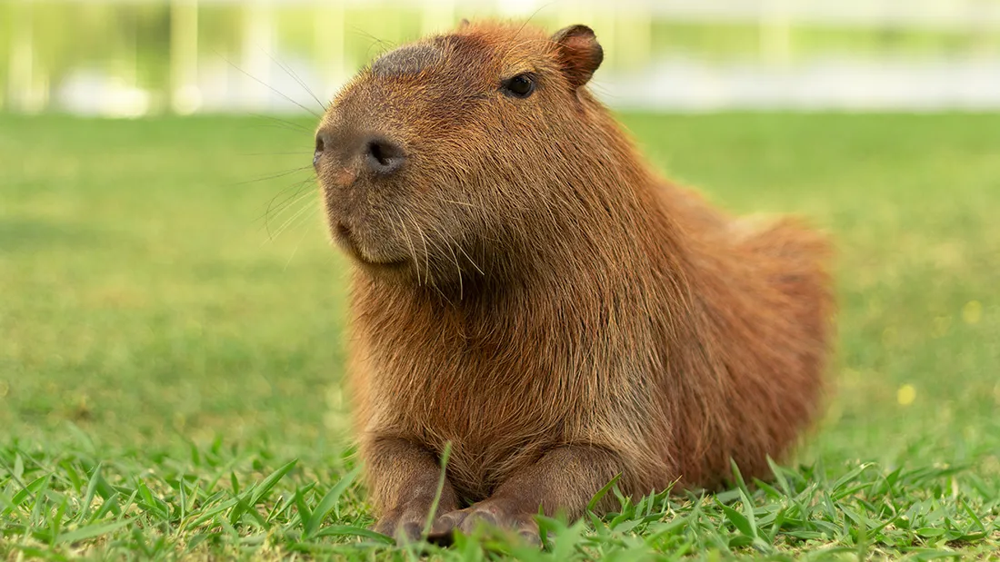
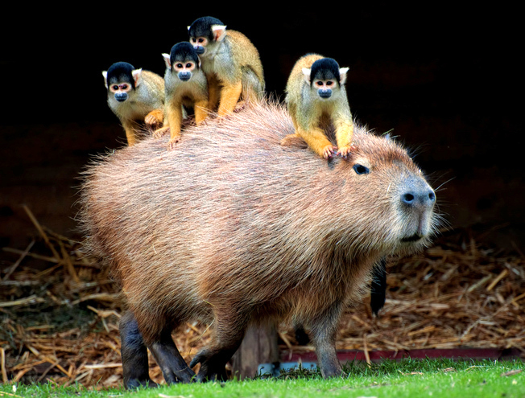
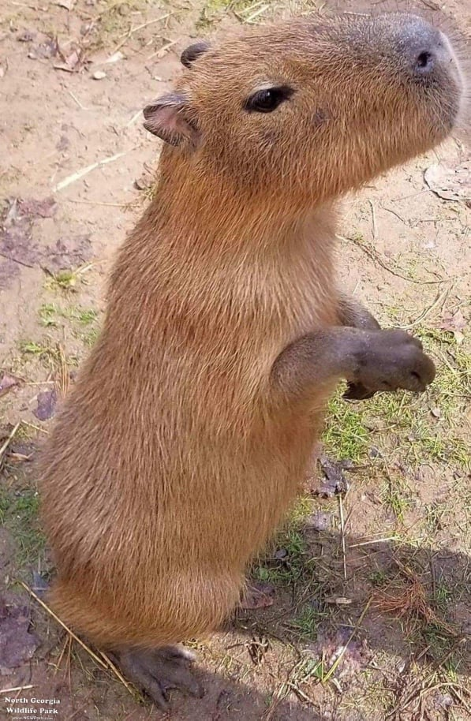
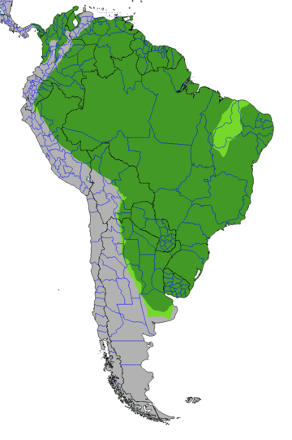
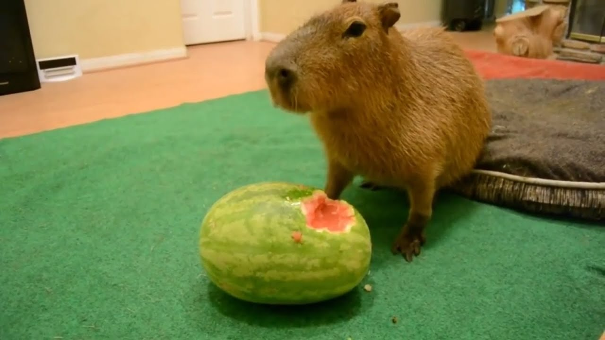

Capibara
Su cuerpo está completamente adaptado al medio acuático
Las capibaras viven junto a ríos y humedales, por lo que su cuerpo está perfectamente adaptado a la vida acuática. De hecho, dependen del agua para sobrevivir. Así, por ejemplo, tienen unos pies palmeados, con unas patas traseras dotadas de una membrana interdigital que les ayuda a nadar con facilidad. Además, tienen un pelaje denso y resistente al agua que les sirve para mantener la temperatura corporal y a desplazarse con facilidad. La colocación de sus ojos, en la parte alta de la cabeza, les es de gran ayuda a la hora de desplazarse por el agua, pues pueden ver, e incluso respirar, cómodamente mientras nadan.

Se guían por el olor
El olor es muy importante en el mundo de las capibaras. Estas criaturas se guían por el olfato para aparearse y para establecer su dominancia. Por ejemplo, los machos tienen una protuberancia en la parte superior del hocico que segrega un líquido blanco cuyo olor sirve como ‘huella dactilar’ olfativa que señala el estatus del individuo y que esparcen por el territorio frotándose contra árboles y arbustos. Tanto machos como hembras segregan una serie de sustancias químicas muy individualizadas que les sirven para reconocer a miembros del grupo y marcar el territorio.

Los animales mas amistosos
Gallinas, monos, tortugas, diversos tipos de pájaros. Para los capibaras no hay límites en el terreno amistoso. La ciencia no tiene todavía una respuesta para explicar por qué estos animales son tan bien recibidos entre diversas especies salvajes.
Una de las explicaciones que se ha dado es su carácter siempre apacible. En general, no son animales agresivos, ni se distinguen por hacer mucho ruido. Como son excelentes nadadores, otros animales más pequeños se apoyan en ellos como «autobús» para cruzar cuerpos de agua en movimiento.
Además de siempre llevarla bien con una gran diversidad de animales, los capibaras nunca están solos. De manera general, se les encuentra con sus pares, en grupos numerosos de hasta 20 ejemplares.
Habitat
 Su enorme área de distribución comprende casi toda Sudamérica al este de los Andes en las cuencas del río Orinoco, del Amazonas y del Río de la Plata; cubriendo desde el este de Venezuela y la Guyana hasta Uruguay, Paraguay y en gran parte del norte de Argentina, mayormente en la provincia de Corrientes.
Pueden vivir en diferentes tipos de hábitat, pero muestran preferencia por algunos en concreto. Suelen encontrarse cerca de lagos, ríos, marismas o manglares. También necesitan un suelo firme para dormir, idealmente con una vegetación espesa que les sirve de protección. Para alimentarse no tienen problema en adentrarse por la sabana y herbazales. La mayor densidad de población de capibaras se encuentra en las extensas zonas húmedas de Sudamérica, como el Pantanal, o la región de los Llanos del norte del continente, bañada por el río Orinoco. Viven mayoritariamente en las llanuras, pero también habitan en altitudes de hasta 1300 metros sobre el nivel del mar. En comparación con otras especies animales de Sudamérica, las capibaras toleran bastante bien los cambios de hábitat provocados por la actividad humana, y también pueden sobrevivir en zonas transformadas en plantaciones o pastos.
| CONTINENTES | America del Sur |
|---|---|
| PAISES | Argentina, Bolivia, Brasil, Colombia, Ecuador, Guyana, Paraguay, Perú, Uruguay, Venezuela |
| REINOS BIOGEOGRÁFICOS | Neotropico |
| BIOMAS WWF | Sabana inundada, Pluvisilva |
Habitos alimenticios y reproductivos
La dieta se compone principalmente de hierba terrestre y la complementa de vez en cuando con plantas acuáticas. A veces entran en plantaciones y se alimentan, por ejemplo, de cañas de azúcar, sandías o maíz. La creencia extendida de que los peces también forman parte de la dieta de los capibaras es falsa. Tienen un aparato digestivo extremadamente eficiente que les permite subsistir con una dieta el 75 % de la cual se compone de solo entre cuatro y seis especies de plantas, y después dejan de comerlas durante un tiempo, permitiendo que las plantas de estas especies se recuperen antes de volver a comérselas.
Su aparato digestivo presenta diversas adaptaciones a su dieta, como un intestino más largo y un ciego en forma de saco agrandado. De manera similar a otros roedores, como los cobaya, o los lagomorfas, los carpinchos practican la coprofagia o ingestión ocasional de los excrementos. Las heces fecales son una forma blanda y adhesiva de excrementos, que están fermentados por unas bacterias especiales en el ciego, y que son vueltos a ingerir inmediatamente después de la excreción. De esta manera, pueden extraer el máximo de nutrientes de sus alimentos ricos en celulosa. Cuando los excrementos son expulsados definitivamente por segunda vez, son ovales y secos.
Las capibaras pasan gran parte de su vida en el agua, incluso copulan. Cuando una hembra entra en celo, un macho empieza a seguirla de cerca, a veces durante largos periodos de tiempo, antes de que se produzca el apareamiento. La cópula suele durar solo unos segundos, pero una hembra suele hacerlo varias veces por periodo de celo. Las crías nacen a los 150 días, en camadas de entre 2 y 8 individuos. Se destetan a los 3 meses, durante los cuales maman tanto de su propia madre como de las otras hembras del grupo, que suelen estar estrechamente emparentadas.
Estado de conservacion
Sus depredadores naturales más importantes son félidos como jaguares, pumas u ocelotes, y también los zorros selváticos, las anacondas y caimanes los suelen atacar frecuentemente. A veces, las crías son víctimas de aves de presa como las harpías.
Muchos de los hábitats adecuados para esta especie se encuentran en regiones muy utilizadas para el pastoreo. Como los humanos preparan fuentes de agua para sus animales, minimizan la cantidad de carnívoros por medio de la caza y como los bovinos mantienen la hierba corta, en muchas zonas se ha producido un aumento de su población. Censos de los latifundios bovinos de la región de los Llanos revelaron una densidad de Hydrochoerus hydrochaeris de entre 50 y 300 /km². Los propietarios de terrenos de pastoreo los persiguen, especialmente durante la estación seca, ya que consideran que las capibaras arrasan con la comida de sus animales. Sin embargo muchas personas consideran que es cruel la matanza de dicho animal por parte de estos latifundistas, ya que se hace a garrotazos, disparos o con perros de caza.
En Brasil principalmente, existen personas que creen que es bueno cazarlas por los daños que supuestamente ocasionan en los cultivos industriales; tales como el de la soja y el mijo, y especialmente en las plantaciones de arroz, en donde podrían causar una devastación considerable. En dichos sitios se les considera como a una plaga.
En las regiones en que son cazados en cantidades comerciales, como por ejemplo en las regiones de la frontera colombo-venezolana, ya son raros sus avistajes por parte de los locales. En otras naciones, como en Perú, su número se ha reducido drásticamente o han desaparecido como consecuencia de su consumo voraz o la desaparición de su hábitat. Aunque, en general son abundantes y tienen en una amplia distribución en otras regiones del continente suramericano, no se los considera una especia amenazada por tal motivo.